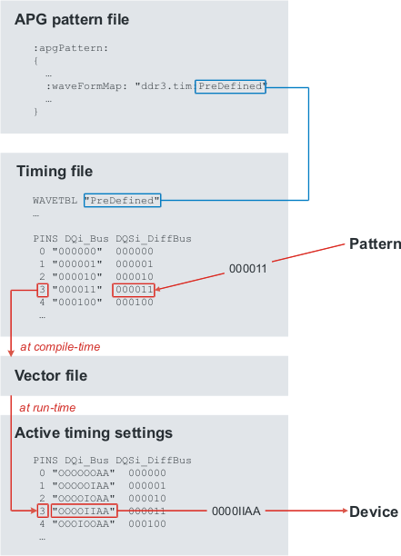

Setting up direct waveform mapping
Direct waveform mapping converts the waveforms created by the compiler to indexes into the timing file that are added to the vector file.
About this task
Use direct waveform mapping unless you have a specific reason for using indirect waveform mapping. (See Waveform mapping for more information.)
Before you begin
Make sure that you have properly set up the timing file you are going to use. The PINS tables in the timing file should have three columns: physical waveform index, edge specification, and logical waveform. The edge specification can be in standard notation (for example, "d1:0 d2:0 d3:1 d4:1") or fast notation (for example, "0011"), but not shorthand notation. The edge specification must always be enclosed in quotes.
Procedure
Results
When the pattern is compiled, any logical waveforms created by the compiler are looked up in the appropriate PINS table of the timing file and replaced by the corresponding index (which is used at runtime to look up the corresponding vector from the wavetable), which is written to the vector file. At run time, this index is used to look up the correct waveform in the wavetable and send it to the device.
Example

What to do next
Set up Automatic waveform generation, if required, or compile the pattern.
Functional changes
- Introduced before SmarTest 6.3.2